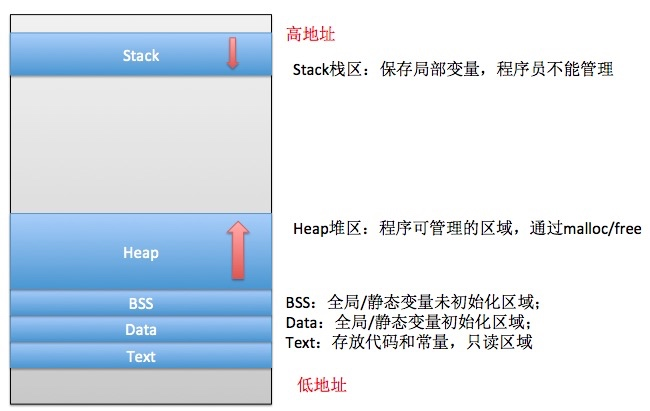
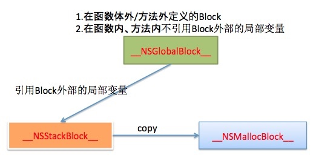

block的类型
在学习Block类型前，我们必须清楚内存的分布结构：

我们还需要把内存管理模式设置为MRC，在Build Phases -> Compile Sources中选中需要修改的文件，双击输入：-fno-objc-arc
Block的三种类型，分别是：
- NSGlobalBlock：保存在Data区域；
- NSStackBlock ：保存在Stack区域；
- NSMallocBlock：保存在Heap区域。
三种类型存在的关系，如下图：

NSGlobalBlock
// 1.在函数体外/方法外定义的Block
void (^outsideFunctionGlobalBlock)(void) = ^{
NSLog(@"outside function global block");
};
int main(int argc, const char * argv[]) {
@autoreleasepool {
// 2. 在函数体内/方法内，不引用Block外的局部变量
void (^insideFunctionGlobalBlock)(void) = ^{
NSLog(@"inside function global block");
};
NSLog(@"outside = %@\ninside = %@", outsideFunctionGlobalBlock, insideFunctionGlobalBlock);
}
return 0;
}
NSStackBlock
int main(int argc, const char * argv[]) {
@autoreleasepool {
// 在block内引用了外部的局部变量
int a = 10;
void (^stackBlock)(void) = ^{
NSLog(@"stack block:%d", a);
};
NSLog(@"stackBlock = %@", stackBlock);
}
return 0;
}
NSMallocBlock
int main(int argc, const char * argv[]) {
@autoreleasepool {
// 由stack类型的block使用copy得来
int a = 10;
void (^heapBlock)(void) = [^{
NSLog(@"stack block:%d", a);
} copy];
NSLog(@"heapBlock = %@", heapBlock);
}
return 0;
}
思考
请回答下面代码中Block的类型：
int a = 10;
void (^outsideFunctionBlock1)(void) = ^{
NSLog(@"outside function block：%d", a);
};
void (^outsideFunctionBlock2)(int x, int y) = ^(int x, int y){
NSLog(@"outside function block：%d, (x+y = %d)", a, x+y);
};
int main(int argc, const char * argv[]) {
@autoreleasepool {
static int num = 20;
int var = 30;
void (^insideFunctionBlock1)(void) = ^{
NSLog(@"inside function block：%d", a);
};
void (^insideFunctionBlock2)(void) = ^{
NSLog(@"inside function block：%d", var);
};
void (^insideFunctionBlock3)(void) = ^{
NSLog(@"inside function block：%d，num = %d", a, num);
};
void (^insideFunctionBlock4)(void) = ^{
NSLog(@"inside function block：%d, num = %d, var = %d", a, num, var);
};
void (^insideFunctionBlock5)(void) = [insideFunctionBlock1 copy];
void (^insideFunctionBlock6)(void) = [insideFunctionBlock2 copy];
void (^insideFunctionBlock7)(void) = [insideFunctionBlock3 copy];
}
return 0;
}